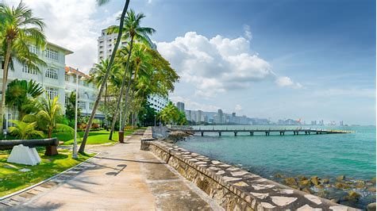

Home George Town. Dunmore Town. Freeport. Grand Bahama. Blue Lagoon Island.
George Town is the capital and largest city in the Cayman Islands, located on Grand Cayman. It was named after King George III. As of 2022, the city had a population of 40,957, making it the largest city (by population) of all the British Overseas Territories.
The town offers stunning sightseeing oppurtinities paired with unique experiences like glass boats and ziplining. 